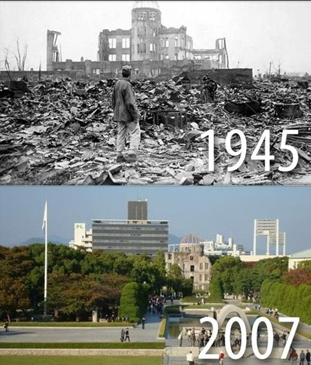

După capitularea Japoniei, cel de al doilea război modial se terminase in întregime. Deși orașul fusese complet distrus de catre bomba atomică „Little Boy” , japonezii au reusit să restaureze orașul intr-un timp relativ scurt de doar câțiva ani(nu se stie cu exactitate deaoarece pană și acum mai sunt unele chestii neterminate). Acest lucru ne arată ca Japonia este o țară prosperă și optimistă. Până la urmă și acest dezastru a avut o parte buna deoarece japonezii se pregăteau de o invazie in America, ceea ce rezulta circa 500.000 – 1.000.000 de morti pentru ambele tabere. Pe lângă asta soldatii japonezi erau instruiti să își lege bombe de ei și să se arunce sub tancuri, aceași chestie făcând-o și cu avionele. Dacă americanii nu ar fi trimis acele bombe nucleare probabil nu s-ar fi terminat războiul si ar fi fost de 2 sau de 3 ori mai multe victime.
